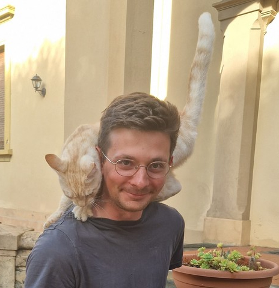

Physics Ph.D. Candidate · Columbia University

I am a cosmologist interested in using cosmic microwave background (CMB) and large-scale structure (LSS) observations to test fundamental physics.
I am a fourth-year physics Ph.D. student at Columbia University, advised by J. Colin Hill, although I am currently visiting Lawrence Berkeley National Lab as a DOE SCGSR Fellow. Before Columbia, I spent a year at the Max Planck Institute for Astrophysics in Garching, Germany as a Fulbright Fellow. I completed my masters in physics and bachelors in physics and mathematics at the University of Pennsylvania in 2021.
My research sits at the intersection of observational and theoretical cosmology, with a focus on developing statistical and computational tools for extracting new physics from cosmological data. I am fortunate to be working at a time with exceptional CMB and LSS observations. I am a member of the Atacama Cosmology Telescope (ACT), the Dark Energy Spectroscopic Instrument (DESI), and the Simons Observatory (SO).
Primordial non-Gaussianity (PNG) is arguably one of our best probes of the fundamental physics responsible for inflation. I am interested in developing estimators for PNG at small scales, where non-linear nuisances make precision cosmology notoriously challenging. Using large-scale structure consistency relations, my collaborators and I developed non-perturbative estimators for a range of PNG models using the matter bispectrum, lensing bispectrum, and the matter and galaxy trispectrum. A useful byproduct of this program is the first suite of N-body simulations with cosmological collider initial conditions, as well as PNGolin, a package for measuring large-scale structure power spectra, bispectra, and trispectra. More recently, we have shown that these bispectrum and trispectrum estimators can be used to directly measure the non-Gaussian power spectrum covariance .
I use CMB secondary anisotropies to probe both fundamental physics and astrophysics. This includes using patchy screening of the CMB to place constraints on axion-like particles, as well as extracting evidence of galaxy cluster rotation via the rotational kinetic Sunyaev-Zel'dovich effect. These analyses are focused on extracting faint signals from CMB maps.
I test extensions to the standard cosmological model using combinations of CMB, LSS, and astrophysical data. This includes showing that early dark energy cosmologies are in tension with eBOSS Lyman-alpha forest observations, exploring oscillatory dark energy models motivated by recent DESI results, and obtaining the tightest constraint on the effective number of relativistic degrees of freedom in the early Universe (Neff) to date by combining primordial element abundance measurements with CMB observations.